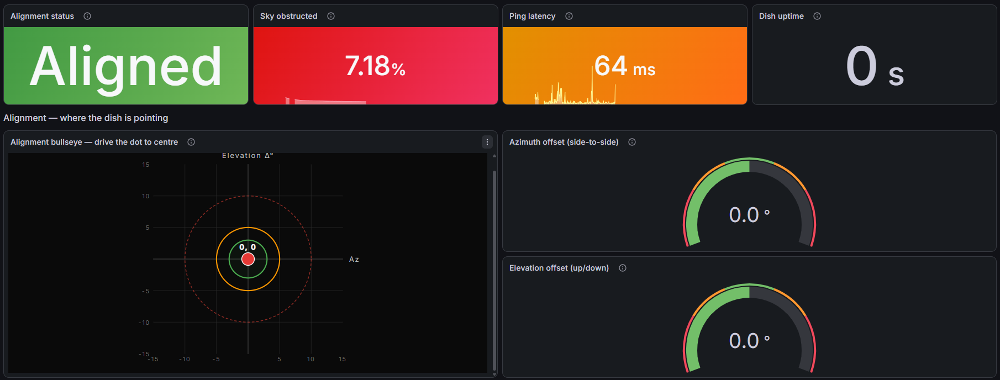
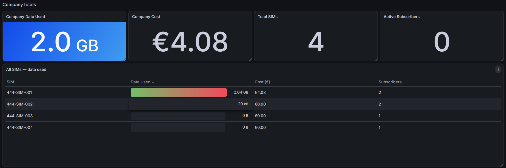
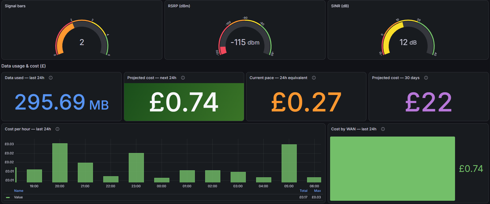
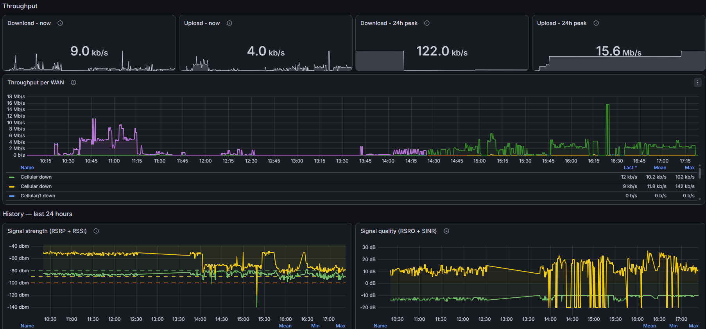

Vistigo Maritime
Know which ship is on which link, right now.
Vistigo Maritime reads the Starlink dish, the Peplink router and the SIM account on every vessel, every 15 to 60 seconds, and puts the whole fleet on one screen. No more logging into routers one at a time to find out who's offline.

Where the numbers come from
We read each device the way it prefers. The dish only answers on the ship's own network, so a small collector on board asks it directly. The router, modems and SIMs already report to their makers' cloud services, so we collect from there. Everything is tagged with the vessel it came from.
Throughput, latency to the ground station, how much sky is blocked, GPS, where it's pointing, its own alerts
Sits behind the dish on the ship's network and pushes out over HTTPS
Which WAN is live, CPU and memory, and every dish if there's more than one
One call per router, split into system, WAN and Starlink figures
RSRP, RSRQ, SINR, RSSI, signal bars, band and operator
Read from the same router status as above, one line per modem
Live upload and download on Starlink, cellular and Wi-Fi
Runs as its own service, so a fault here can't stop the rest
Data used, cost and subscribers, per SIM and for the company
Straight from the SIM provider's account, not estimated
Up or down, and for how long
Raises the alarm when a vessel goes dark or drops to its backup link
Your fleet
Grafana, in 444Video's house style
- Peplink Overview
- Cellular
- Router Health
- Starlink
- SIM Card Monitoring
Alerts: vessel offline, running on backup, obstruction climbing, SIM spend over budget.
What your team opens in the morning
A home page for the fleet, with a card for each job. Click through for the detail.
Peplink Overview
Every WAN, the headline health figures, cellular signal and Starlink status on one screen.
Cellular
RSRP, RSRQ, SINR, RSSI and bars, with the last 24 hours to show how stable it's been.
Router Health
CPU, memory and daily peaks, so you spot a router that's struggling.
Starlink
Alignment, obstruction, throughput, latency and pointing.



Who uses it
Ship operators and fleet managers
One screen for every vessel, instead of a login per router.
Maritime IT and managed service providers
A view for each customer, with alerts going to your own NOC.
Survey, offshore and research vessels
A record of when the link was up and how good it was, for crew and clients.
Broadcasting from the water
Add Vistigo Broadcast and see the stream next to the link carrying it.
It all runs on the same system
Add another product whenever you like. The data lands in the same place, so a dropped stream and the satellite link it was on show up on the same timeline.
Tell us what you can't see.
Tell us how many vessels you run and what's on board. We'll show you your fleet in Vistigo.